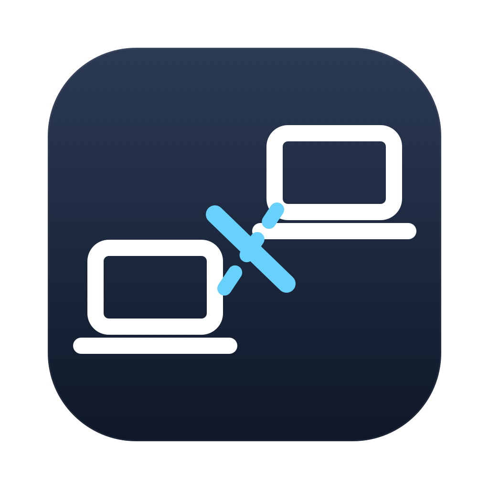

Steady Call. Stop your Mac's video calls from freezing.
If Zoom, Teams, FaceTime or Google Meet freeze for a few seconds every minute on your MacBook, and only over Wi-Fi, the cause is probably not your internet. It is AWDL, the radio link behind Universal Control, AirDrop and Handoff. AWDLess switches it off only while you are in a meeting, and back on when you hang up.
Download for macOS Source on GitHubFree · Open source (MIT) · macOS 14 Sonoma or later · Apple silicon and Intel · Notarized
Continuity features talk to your other Apple devices over a peer-to-peer link that shares the same Wi-Fi radio as your network. To do that the radio leaves your router's channel on a fixed schedule. When Universal Control is active, or AirDrop is scanning, those trips get long. Your call's packets wait, then arrive in a burst: the picture freezes for one to three seconds, every 10 to 20 seconds. Every Mac in the link stalls at the same moment, even one that is not in the call.
| Same call, measured from a second Mac (0.5 s pings to the router) | Lost | Worst delay | Stalls over 500 ms |
|---|---|---|---|
| Continuity on, 2.4 min | 3 | 1822 ms | 13 |
| Continuity off, 3.6 min | 0 | 102 ms | 0 |
FRITZ!Box 6660 on Vodafone cable, MacBook Pro with Universal Control to a Mac mini. The internet line, cable modem and router were ruled out first.
A camera turning on, or a meeting app using the microphone. Zoom, Teams, FaceTime, Slack, Webex, Discord, Meet, and anything in a browser.
Universal Control, AirDrop and Handoff are off for exactly the length of the call. On Ethernet nothing is touched.
Live router pings and a 60 s stall chart in the menu bar, plus a readout of Continuity traffic, so you can see it working.
The built-in test runs two minutes with Continuity on and two off, then gives a verdict. If your link is clean, it says so.
Menu bar only. Manual "off now" and "always on" with timers. Shortcuts actions. Launch at login.
A small helper approved once in System Settings does the switching. It only talks to AWDLess and restores Continuity if the app quits.
Prefer the command line? brew install --cask awdless is coming after the first release.
Apple's Continuity features use a peer-to-peer Wi-Fi link (AWDL) that makes the radio leave your network's channel on a shared schedule. On a call that shows up as freezes of one to three seconds. Your internet connection is usually fine.
Ping your router during a call. If pings to the router stall at the same moments as the call, the problem is between your Mac and the router. AWDLess's built-in test measures exactly this.
Only during a meeting. Continuity returns automatically when the camera turns off. On Ethernet nothing changes.
Often yes, when the iPhone is on the same Wi-Fi network. If it drops, use the built-in camera during calls.
The App Store sandbox does not allow changing a network interface, so this kind of fix can only be distributed directly. AWDLess is notarized by Apple.
Yes: sudo ifconfig awdl0 down before a call and up after. macOS tends to re-enable it on its own within seconds, which is what AWDLess handles for you.